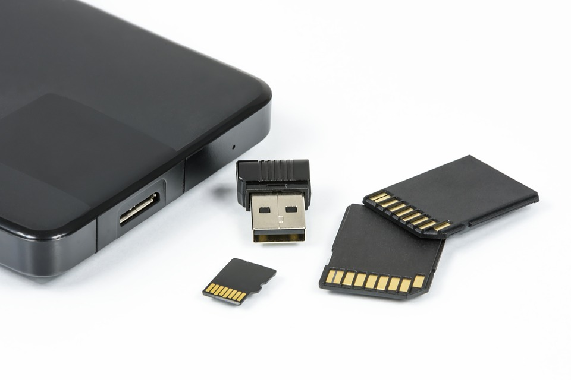

Para grabar una imagen de Raspbian, Ubuntu, Debian,… o cualquier otro Sistema Operativo en GNU/Linux, podemos hacerlo de una forma muy liviana y sencilla desde la terminal con dd.

Como ejemplo en este artículo, voy a grabar una imagen de Raspbian.
Descargo la imagen de raspbian desde su página oficial. Esta imagen está en zip, así que voy a descomprimirla
unzip 2019-09-26-raspbian-buster-lite.zip
Introducimos nuestro Pendrive o SD a nuestro PC y mediante esta línea, localizamos que unidad es
df -h
Por tamaño, la unidad de mi Pendrive es sdb.
Primero necesitamos desmonta la unidad, en mi caso la unidad es sdb.
Ya tenía un raspian antiguo de pruebas. Hay 2 particiones, sdb1 y sdb2. Desmonto las dos.
umount /dev/sdb1
umount /dev/sdb2
Vamos a utilizar dd para grabar la imágen.
dd [if=<ORIGEN>] [of=<DESTINO>]
sudo dd bs=1M if=2019-09-26-raspbian-buster-lite.img of=/dev/sdb status=progress
if es la ruta origen, en este caso la imágen de raspbian y off es el destino, el Pendrive. bs=1M, significa que la escritura se hará en bloques de 1M. status=progress, muestra el proceso de grabado, para que no nos desesperemos
Si el archivo es extensión .img.xz, podemos grabarlo directamente con este comando:
sudo xzcat ~/recalbox-rpi3.img.xz | dd bs=1M of=/dev/mmcblk3p status=progress
Publicado por Angel el martes 29 octubre del 2019
También te puede interesar:
Powered by org-bash-blog
Writing in orgmode whith emacs

Este obra está bajo una licencia de Creative Commons Reconocimiento-NoComercial-CompartirIgual 4.0 Internacional.